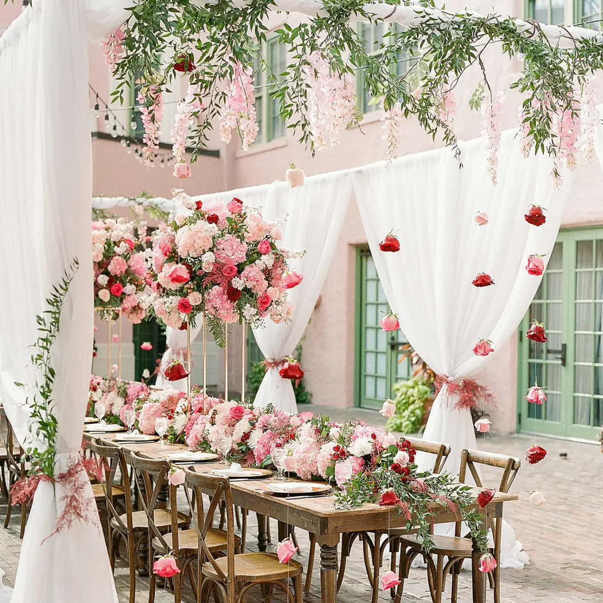

Flowers speak a language all their own — one that transcends words, cultures, and time. But choosing the right bouquet for the right moment? That's where most people hesitate. After fifteen years arranging flowers for every occasion imaginable, here is everything our florists wish every gifter knew.
1. Read the Room Before You Pick a Bloom
The single most important factor in bouquet selection isn't the flower itself — it's the emotional context. Before you choose a single stem, ask yourself: what do you want this bouquet to say? Urgency has a different floral vocabulary than tenderness. Celebration looks nothing like sympathy.
Our florists use what we call the Emotional Occasion Matrix — a simple way to map your feeling to the right flower family:
The Emotional Occasion Matrix
Romantic love → Roses, peonies, tulips. Celebration → Sunflowers, gerberas, alstroemeria. Sympathy → White lilies, chrysanthemums, orchids. Gratitude → Yellow roses, lavender, mixed wildflowers. Apology → Purple hyacinth, white tulips, baby's breath.
This matrix isn't a rigid rule — it's a starting point. The best bouquets always carry a personal layer: her favourite colour, the flowers from your wedding day, the bloom from the city where you first met.

2. The Secret Language of Flowers
Floriography — the Victorian practice of sending coded messages through flowers — is making a quiet, beautiful comeback. Understanding what each bloom traditionally communicates adds a depth of meaning that a generic bouquet simply cannot match.
A single red rose says "I love you." Twelve say "Be mine." But a bouquet of red and white roses together? "Unity" — traditionally sent to mark the beginning of a life together.
— Rose & Stem Head Florist, Priya Sharma
Key blooms and their meanings:
- Red Rose — Deep romantic love, passion, respect
- Pink Rose — Admiration, gratitude, joy, gentle affection
- White Rose — Purity, new beginnings, remembrance
- Yellow Rose — Friendship, warmth, care — never romantic in the traditional sense
- Peony — Romance, prosperity, good luck in marriage
- Sunflower — Adoration, loyalty, longevity — "I will always look up to you"
- Lavender — Serenity, devotion, grace
- White Lily — Purity, sympathy, the restored innocence of the soul
3. Your Occasion-by-Occasion Guide
Let's get specific. Here are our florists' top recommendations by occasion, curated from fifteen years of real orders:
Anniversaries
This is the moment to be romantic — genuinely, not commercially. The classic choice is a mix of red and pink roses with accents of baby's breath and eucalyptus. But if you've been together more than five years, consider asking your florist to incorporate "your flower" — the bloom from your wedding or the one she mentioned once in passing. That kind of remembering is the most romantic thing you can give.
For a 10th anniversary (tin/aluminium), consider silver-leaf eucalyptus as a foliage accent. For a 25th (silver), white roses with silver brunia berries are stunning. Match the arrangement to the milestone.
Birthdays
Birthdays call for joy — so reach for colour. Gerbera daisies, sunflowers, mixed alstroemeria, and brightly coloured tulips all carry that energy of celebration. If you know her birth flower, include it: January is carnation, February is violet, March is daffodil, and so on through the calendar.


Weddings & Engagements
For engagement gifts, pale pink peonies and white garden roses say "romance and optimism" more eloquently than almost anything else. For weddings, coordinate with the couple's colour palette — typically provided in the invitation or wedding website. White and blush are always safe; but a personalised choice that references the couple's story will always be remembered longer.
Sympathy & Condolences
This is the occasion where simplicity and sincerity matter most. White lilies and white chrysanthemums are traditional in India, representing purity and the soul's journey. Avoid red flowers for sympathy. Soft cream-coloured roses with sprigs of eucalyptus and a handwritten note are always appropriate and deeply comforting.
4. Practical Tips for Ordering
Once you've chosen your occasion and bloom, here's how to translate that into the perfect order:
-
1
Order 24–48 hours in advance
This gives your florist time to source premium-grade blooms, especially for seasonal varieties like peonies or garden roses.
-
2
Specify the colour palette, not just the flower
"Pink roses" is a starting point. "Blush pink and cream roses with dusty sage greenery and soft white baby's breath" is a bouquet.
-
3
Choose the right size for the occasion
A hand-tied posy for a thank-you. A medium bouquet for a birthday. A full arrangement for a milestone anniversary. Size communicates effort and significance.
-
4
Add a personalised note — always
The flowers fade. The note stays. Our cards are preserved by more recipients than any other part of the arrangement. Make it specific and real.
-
5
Consider care instructions for longevity
All Rose & Stem bouquets include a care card. Make sure the recipient knows to recut stems at an angle, change the water daily, and keep away from direct sunlight.
5. The Most Important Thing
After everything — the bloom selection, the colour palette, the size, the occasion — the most important ingredient in any bouquet is the intention behind it. Flowers have been humanity's most eloquent emotional shorthand for thousands of years precisely because they are inherently generous. They exist only to bloom, and to give that bloom away.
Whatever you choose, choose it with full attention. Because the recipient will always feel, in some wordless way, whether you truly thought of them — or simply ordered the first arrangement you found.
The best bouquet isn't the most expensive one. It's the one that says: I remembered what you love.
At Rose & Stem, every arrangement we craft carries this philosophy. Browse our curated collections, and if you're ever uncertain, our florists are always one message away from helping you get it exactly right.
Comments (4)
This is absolutely the most thoughtful breakdown of bouquet selection I've come across. The "Emotional Occasion Matrix" framing is genuinely useful — I've been overthinking this for years and this makes it so clear. Ordering my husband's anniversary bouquet right now!
Thank you so much, Ananya! That's exactly the kind of thing I hoped this guide would help with. I hope the anniversary bouquet is perfect — do let us know how it goes! 🌹
The section on sympathy flowers is really helpful — I've always been unsure what to send when someone is grieving. The white lilies + eucalyptus suggestion is exactly what I needed. Very sensitively written.
Never knew yellow roses weren't meant to be romantic! I've been sending them to my partner thinking they were "joyful." Quick question — is that purely a cultural western thing or universal? Curious!
Leave a Comment
Your email address will not be published. Required fields are marked *